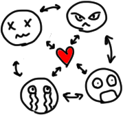

Дифференциальная геометрия и топология
Изъявление темам, на странице сей обретающимся
Prerequisites
Теорема о неявной функции
Связность и линейная связность
Связность
Пример: связное пространство
Пример: несвязное пространство
Свойства связных множеств
Линейная связность
Пример: линейно связное пространство
Пример: не линейно связное пространство, но связное
Свойства линейно связных множеств
Гладкое многообразие
Определение
Пример: эквивалентные атласы
Пример: не эквивалентные атласы
Пример: многообразие
\(\mathbb{R}^n\)
Пример: многообразие
\(S^n\)
Гладкие отображения
Определения
Пример: гладкое отображение
Пример: диффеоморфные многообразия
Пример: гомеоморфные, но не диффеоморфные многообразия
Существование атласа с картами, диффеоморфными шару
\(\mathbb{R}^n\)
Существование гладкого разбиения единицы
Поверхность уровня как многообразие
Касательные векторы
Определения
Определения
\(d_{P}f\)
для трех определений касательного вектора
Что такое
\(dx^i\)
?
Регулярное значение
Пример: регулярные точки
Лемма Сарда
Пример: не погружение
Пример: погружение, но образ не замкнут
Пример: погружение, но не гомеоморфизм на образ
Пример: вложение
Прообраз регулярного значения – это подмногообразие
Определение подмногообразия
Пример подмногообразия
Подмногообразие – это образ сильного вложения
Очень слабая теорема Уитни
Ориентированное многообразие с краем
Риманова метрика
Определения
Обратный образ римановой метрики при вложении – риманова метрика
Тензоры
Дифференциальные формы
Ковариантное дифференцирование
Определение
Определение через свойства (аксиоматическое)
Симметрическая связность
Риманова связность
Существование и единственность римановой связности